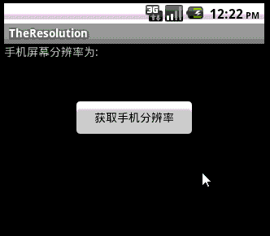

Android中取得手机屏幕大小
先看效果图：

其实就是 DisplayMetrics类 的应用 ，代码如下：
import android.app.Activity;import android.os.Bundle;
import android.util.DisplayMetrics;
import android.view.View;
import android.widget.Button;
import android.widget.TextView;
public class TheResolutionActivity extends Activity {
private TextView tv;
private Button btn;
// 获取手机屏幕分辨率的类
private DisplayMetrics dm;
public void onCreate(Bundle savedInstanceState) {
super.onCreate(savedInstanceState);
setContentView(R.layout.main);
// 获取布局中TextView,Button对像
tv = (TextView) findViewById(R.id.tv);
btn = (Button) findViewById(R.id.btnOK);
// 增加button事件响应
btn.setOnClickListener(new View.OnClickListener() {
public void onClick(View v) {
dm = new DisplayMetrics();
getWindowManager().getDefaultDisplay().getMetrics(dm);
// 获得手机的宽度和高度像素单位为px
String strPM = "手机屏幕分辨率为:" + dm.widthPixels + "*
+ dm.heightPixels;
tv.setText(strPM);
}
});
}
}
也可以这样：
import android.app.Activity;import android.os.Bundle;
import android.view.Display;
import android.view.View;
import android.view.WindowManager;
import android.widget.Button;
import android.widget.TextView;
public class TheResolutionActivity extends Activity {
private TextView tv;
private Button btn;
public void onCreate(Bundle savedInstanceState) {
super.onCreate(savedInstanceState);
setContentView(R.layout.main);
// 获取布局中TextView,Button对像
tv = (TextView) findViewById(R.id.tv);
btn = (Button) findViewById(R.id.btnOK);
// 增加button事件响应
btn.setOnClickListener(new View.OnClickListener() {
public void onClick(View v) {
WindowManager windowManager = getWindowManager();
Display dm = windowManager.getDefaultDisplay();
// 获得手机的宽度和高度像素单位为px
String strPM = "手机屏幕分辨率为:" + dm.getWidth() + "*
+ dm.getHeight();
tv.setText(strPM);
}
});
}
}
这两种方法都可以获取Android手机屏幕的分辨率的。